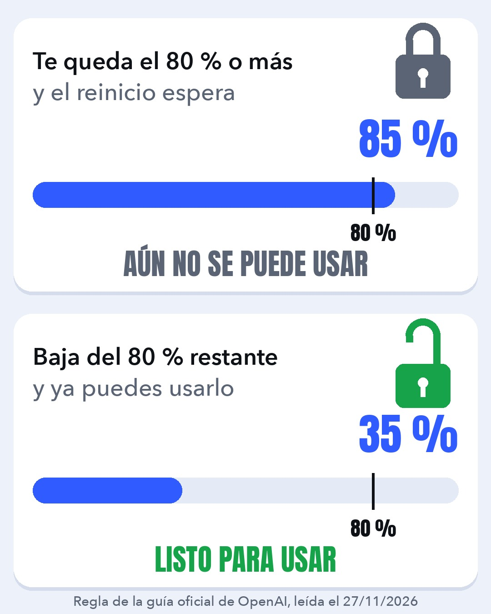
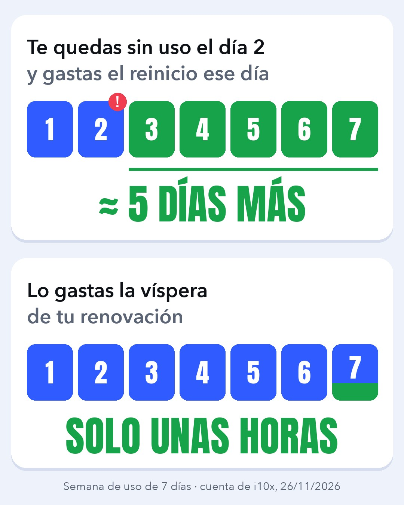
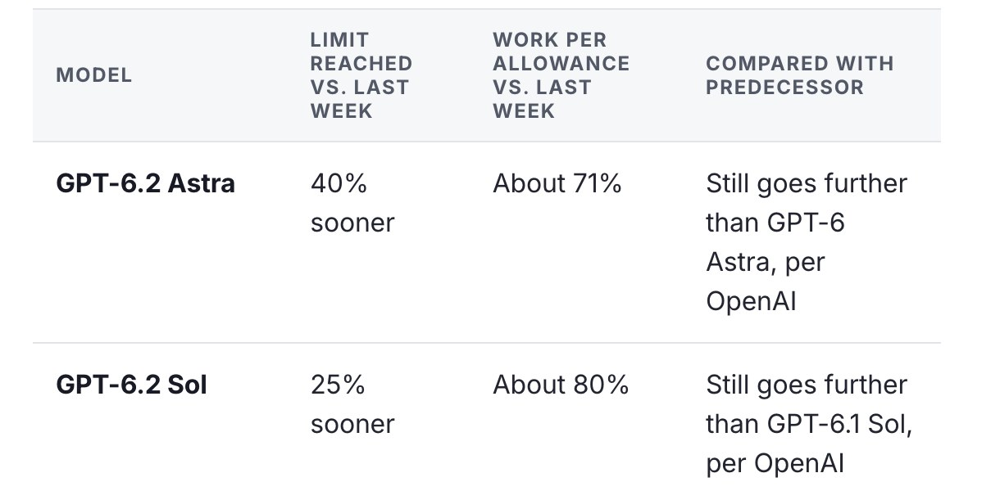
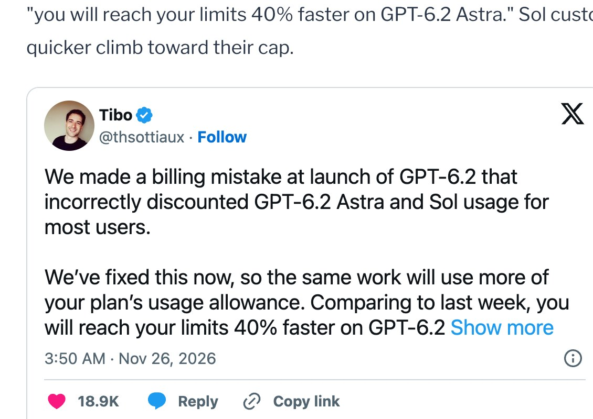

Estira tu límite en ChatGPT
Unos minutos · el reinicio es gratis
VÍDEO OpenAI
01
Abre tu pantalla de uso
Mira cuánto te queda de cada límite.
02
Busca el reinicio guardado
Un resumen te dice si tienes uno.
Haz clic en «1 reset available» para ver qué cubre2
No confirmes todavía
Guía oficial de OpenAI
Cómo funcionan los reinicios en Codex2.
Abrir guía ↗03
Espera a quedarte corto
Guárdalo hasta que lo necesites.

04
Gástalo al principio de semana
Cuenta casi tantos días como falten para renovar.

05
Quita que Codex lo gaste
Decide tú el momento de usarlo.
06
Usa Sol cuando basta
Reserva Astra para lo difícil.
CAPTURA i10x

07
Mira si te toca
El mensaje de OpenAI dice a quién se lo da.
CAPTURA BetaNews / X

Lee esto sobre el reinicio
Aún sin confirmarOpenAI ha dicho que lo va a añadir; mira tu pantalla de Uso antes de contar con él5.
El reinicio caducaÚsalo antes de la fecha que ves en tu cuenta; nadie te lo repone2.
Solo el límite principalNo toca los límites de imágenes, archivos ni Chat Voice, ni sube tu límite2.
Solo en el ordenadorEl móvil no tiene los controles del reinicio; hazlo en el ordenador o en la web2.
Síguenos y te llega la siguiente guía
Para quienes construyen con IA sin saber programar.